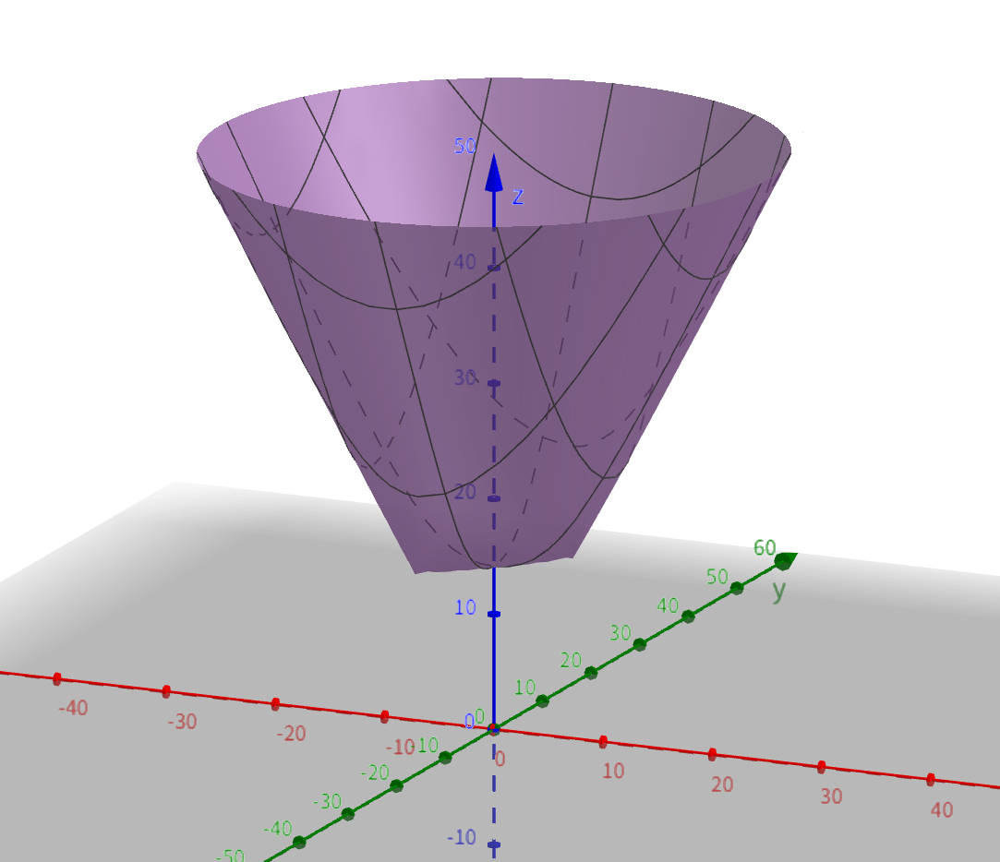
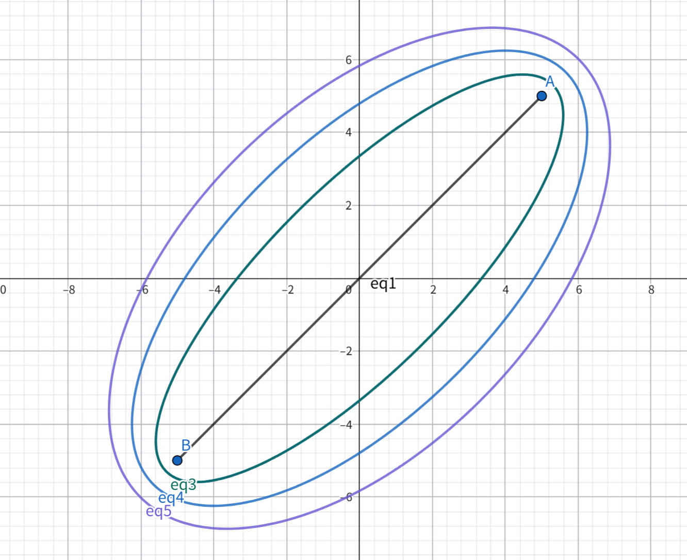
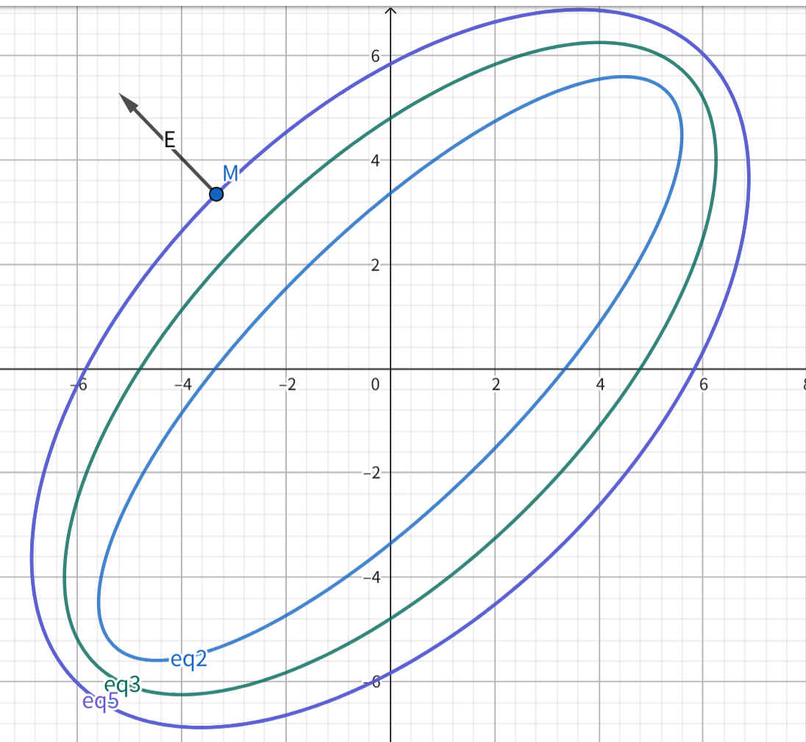
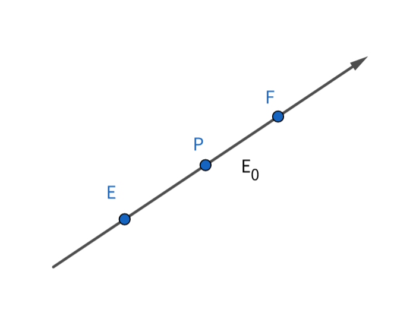

代数法寻找费马点(1)
———距离函数，等势线
回忆费马点问题
对于一个
在平面内建立平面直角坐标系，设
则只需求函数
两个点的情况
平面内有
显然
但我们要尝试从函数的角度（而非几何直观观察）来解决这个问题
在平面内建立平面直角坐标系，设
”我们”当然可以画（想象）出多元函数
f(x,y)=\sqrt{(x-5)^2+(y-5)^2} + \sqrt{(x+5)^2+(y+5)^2}

在高中阶段，多元函数
等势线法
我们考察许多条曲线：
如图
eq1: \varphi_1=10 \sqrt{2} eq2: \varphi_2=15 eq3: \varphi_3=16 eq4: \varphi_4=17 eq5: \varphi_5=18

学过高中物理的同学都知道，这和等势线类似。 我们有必要回忆一下物理中的电势与电场强度
E \varphi
E 是矢量，\varphi 是标量E 的方向与等势线（面）垂直- 沿
E 的方向\varphi 降低 - 在一维情况下，
E =\frac{ \Delta \varphi }{ \Delta x } (E =\frac{ d \varphi }{ d x } ) E 的方向是\varphi 降低最快的方向
我们再深入考虑一下，假设在电场中存在一点
P 点电场强度不为0， \overrightarrow{E}=\overrightarrow{E_0}

在Error: box
Cannot call function box(...) with arguments (...):
expected 7 arguments, but 2 found
.box{ $ P $ 点电场强度为0，$ \overrightarrow{E}=\overrightarrow{0} $} type:{note}说明在
未完待续